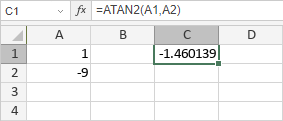

ATAN2 funkcija
Funkcija ATAN2 je jedna od matematičkih i trigonometrijskih funkcija. Koristi se za vraćanje arkus tangensa x i y koordinata.
Sintaksa
ATAN2(x_num, y_num)
Funkcija ATAN2 ima sledeće argumente:
| Argument | Opis |
|---|---|
| x_num | X koordinata tačke, numerička vrednost uneta ručno ili sadržana u ćeliji na koju se pozivate. |
| y_num | Y koordinata tačke, numerička vrednost uneta ručno ili sadržana u ćeliji na koju se pozivate. |
Napomene
Kako primeniti funkciju ATAN2.
Primeri
Slika ispod prikazuje rezultat koji vraća funkcija ATAN2.
